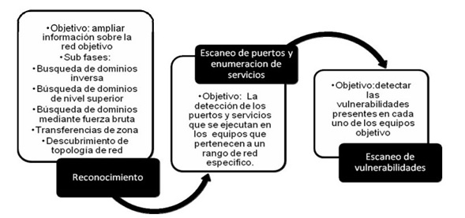
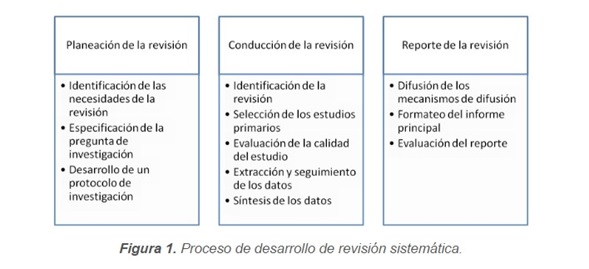

Técnicas de detección y verificación de vulnerabilidades
Es algo más que relevante encontrar vulnerabilidades en diferentes tipos de plataformas por ello existen muchas metodologías para detectarlas y detenerlas, pese a los trabajos que han sido realizados el problema que surge de la presencia de vulnerabilidades en redes de datos, sigue causando grandes pérdidas a organizaciones e individuos en la actualidad.
Hablando sobre las redes de datos tenemos que la metodología Principal lo que buscas es obtener las vulnerabilidades en los equipos de red (tanto cableada como inalámbrica) y servidores en las redes de los datos mencionados los cuales cuidan celosamente las compañías e individuos, todo ello soportado con herramientas de software lo cual podemos ver en la siguiente imagen, la cual nos muestra cómo se implementa tal metodología: 
Si moramos detenidamente podemos ver cada una de las fases para sacar el mayor provecho y prevenir graves vulnerabilidades, en la primera fase nos dedicamos a obtener la información de todos los equipos de la red, luego en la segunda fase se evalúan los equipos obtenidos para determinar los puertos y servicios que están activos en cada uno de ellos y en la fase final se escanean los equipos que presentan mayor riesgo.
El número total de vulnerabilidades evaluadas puede ascender hasta el total registrado en el repositorio de vulnerabilidades de los Estados Unidos, el cual se actualiza diariamente y que muchos software cuentan con esta base de datos.
En el caso de organizaciones que desarrollen software es necesario tener en cuenta que las vulnerabilidades identificadas abarcan las siguientes categorías, entre otras:
• Ataques basados en parámetros de entrada.
• Vulnerabilidades de puerta trasera.
• Configuración de ambientes inseguros.
• Controles débiles de seguridad.
• Abrazos mortales (deadlocks) y condiciones de competencia.
• Comportamiento de aplicación no determinístico.
• Manejo inseguro de errores y auditoría.
• Exposición de información sensible.
En algunas organizaciones se implementa el bloqueo de puertos USB, la detección de archivos comprimidos en el correo electrónico junto con un antivirus que obtenga la información constante de todos los equipos en red.
“Hoy en día cualquier computadora conectada a internet está expuesta a diversas amenazas. Una consecuencia es el aumento en el número de ataques informáticos”. Una manera de prevenirlo es actuar anticipadamente, se deben detectar las vulnerabilidades potenciales que pueden ser aprovechadas por los atacantes, se recomienda presentar una matriz de trazabilidad entre ataques, vulnerabilidades, técnicas y herramientas que determinarán la gravedad de cada uno de los casos.
Inicialmente es importante realizar una revisión sistemática la cual se encuentra contenida en las siguientes fases: 
Luego de ello procedemos a realizar un análisis para determinar alguno de los siguientes ataques:
• Inyección: “Las fallas de inyección, tales como SQL, OS, LDAP, ocurren cuando datos no confidenciales son enviados a un intérprete como parte de un comando o consulta”, lo que buscan es engañar a esta persona para que digite los códigos y así acceder a datos no autorizados.
• Secuencia de Comandos en Sitios Cruzados: “Las fallas XSS ocurren cada vez que una aplicación toma datos no confidenciales y los envía al navegador web sin una validación y codificación apropiada”. Por medio del navegador y una secuencia de comandos pueden secuestrar las sesiones de usuario, destruir sitios web, o dirigir al usuario hacia un sitio malicioso.
• Configuración de Seguridad Incorrecta: se recomienda tener en la organización marcos de trabajo, servidores de aplicación, servidores web, base de datos, y plataformas.” Todas estas configuraciones deben ser definidas, implementadas, y mantenidas ya que por lo general no son seguras por defecto”.
• Exposición de datos sensibles: los datos sensibles tales como números de tarjetas de crédito muchas veces no se les da la importancia que deberían o las mismas credenciales para autenticarse en el sistema no las protegen de manera adecuada.” Los datos sensibles requieren de métodos de protección adicionales tales como el cifrado de datos, así como también de precauciones especiales en un intercambio de datos con el navegador”.
• Falsificación de Petición en Sitios Cruzados (CSRF): “Un ataque CSRF obliga al navegador de una víctima autenticada a enviar una petición HTTP falsificado, incluyendo la sesión del usuario y cualquier otra información de autenticación incluida automáticamente, a una aplicación web vulnerable”.
Las Mejores Técnicas Que Podemos Encontrar Para La Detección De Vulnerabilidades Son:
• Black-box: Es una técnica basada para descubrir vulnerabilidades en aplicaciones web, probando la aplicación desde el punto de vista del atacante (Sreenivasa & Kuman, 2012).
• White-box: Está del lado del servidor. En este tipo de enfoque se tiene acceso a información relevante de la organización (Sreenivasa & Kuman, 2012).
• Análisis estático de código (auditoria de código fuente): Es un método en el que no se requiere ejecutar el programa, este realiza un análisis de código fuente directo para determinar huecos en la seguridad (Sreenivasa & Kuman, 2012).
• Análisis dinámico de código: Se comunica con la aplicación web a través de front-end de la aplicación en orden de identificar vulnerabilidades de seguridad potenciales y debilidades en la arquitectura de la aplicación web (Sreenivasa & Kuman, 2012).
• Pruebas de penetración: Consiste en la simulación de un ataque de los maliciosos outssiders (que no tienen un medio autorizado de acceder a los sistemas de la organización) y de maliciosos insiders (que tienen algún nivel de acceso autorizado). El proceso implica un análisis activo del sistema en busca de posibles vulnerabilidades que podrían resultar de configuración deficiente o inadecuada del sistema, fallos de hardware o software, ya sea conocidos y desconocidos, o fallos operativos en proceso o contramedidas técnicas (Thompson, 2005).
• Pruebas pasivas: con ella podemos analizar el tráfico de telecomunicaciones. Permite detectar fallas y defectos de seguridad mediante el examen de los paquetes capturados (livetrafficor log files) (Mammar, Cavalli, & Jimenez, 2011).
• Pruebas activas: Utiliza un programador de subprocesos asignados al azar para verificar si las advertencias comunicadas por un análisis predictivo de programa son errores reales (Xiao-song Zhang, 2008).
• Fuzz testing (pruebas de caja negra): Consiste en estimular el sistema bajo prueba, utilizando datos aleatorios o mutados queridos, con el fin de detectar comportamientos no deseados como violación de confidencialidad (Xiao-song Zhang, 2008).
Tenemos Que Las Herramientas Más Recomendables Para La Detección De Dichas Vulnerabilidades En El Sistema Son:
• QualysGuard Web Application Scanning WAS: Es una herramienta en la nube que permite realizar pruebas funcionales con selenium para aplicaciones web, además de pruebas de penetración. Permite encontrar vulnerabilidades del top 10 de OWASP (Qualys, 2014).
• WebSite Security Audit- WSSA: Permite examinar páginas web, aplicaciones y servidores web para encontrar vulnerabilidades de seguridad. Realiza pruebas de vulnerabilidades de código conocidas como: SQL Injection, XSS (Cross Site Scripting), entre otras (BeyondSecurity, 2014).
• Retina Web Security Scanner: Es una solución de escaneo de sitios web, aplicaciones web complejas para hacer frente a las vulnerabilidades de aplicaciones. Prioriza las vulnerabilidades por su nivel de riesgo (Beyontrust, 2014).
• WEBAPP 360: Enterprise Class web application scanning: Evalúa de manera completa la infraestructura de aplicaciones web, incluyendo aplicaciones web, sistemas operativos subyacentes y aplicaciones subyacentes en entorno de producción. Utiliza el Top 10 de OWASP para cerrar las brechas de seguridad en aplicaciones web (Tripwire, 2014).
• Frame-C: Es un software Open Source que permite analizar código fuente escrito en C. Reúne varias técnicas de análisis estático en una sola herramienta. (Frama-C, 2014).
• Parasoft C/C++ Test: Es una solución de pruebas para aplicaciones basadas en C y C++. Ayuda a desarrolladores a prevenir y eliminar defectos. Ayuda a eliminar problemas de seguridad, además vigila el cumplimiento de OWASP Top 10, CWE/SANS, FDA, entre otros (Parasoft, 2014).
• Fortify Static Code Analyzer: Proporciona análisis de código estático automatizado para ayudar a los desarrolladores a eliminar las vulnerabilidades y crear software de seguridad. Analiza el código fuente, identifica las causas originarias de las vulnerabilidades de la seguridad del software y correlaciona y prioriza los resultados (HP, 2014).
• MCAfee Vulnerability Manager: Realiza monitorización activa y pasiva, además de realizar pruebas de penetración. Permite conocer los puntos en los que se debe centrar los esfuerzos de programación. Cubre las categorías de OWASP top 10 y CWE-25 (McAfee, 2014).
• Nessus Vulnerability Scanner: Permite realizar escaneo de vulnerabilidades en servidores web, servicios web, además de las vulnerabilidades de OWASP. Además de verificar la configuración erróneas del sistema y parches faltantes. Muestra informes personalizados en formato XML, CVS, PDF nativo y HTML (Tenable, 2014).
• Nexpose Vulnerability Manager: Es una solución de gestión de vulnerabilidades que combina la evaluación de vulnerabilidades y controles, la validación de vulnerabilidades y la planificación de remediación. Maneja estándares de riesgo, vulnerabilidades y gestión de la configuración como PCI DSS, NERC CIP, FISMA, entre otros (Rapid7, 2014).
• Whatweb: Identifica el sitio web, reconoce tecnologías web, incluyendo los sistemas de gestión de contenidos (CMS por sus siglas en inglés), plataformas de blog, bibliotecas de JavaScript, servidores web. También identifica los números de versiones de correo electrónico, errores de SQL y más (MorningStartSecurity, 2014).